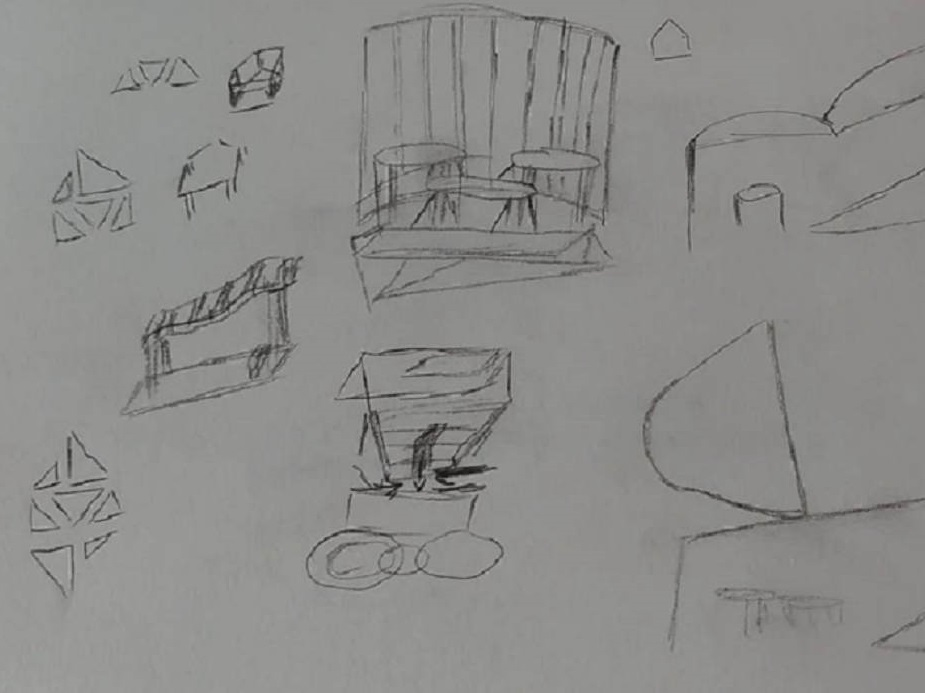
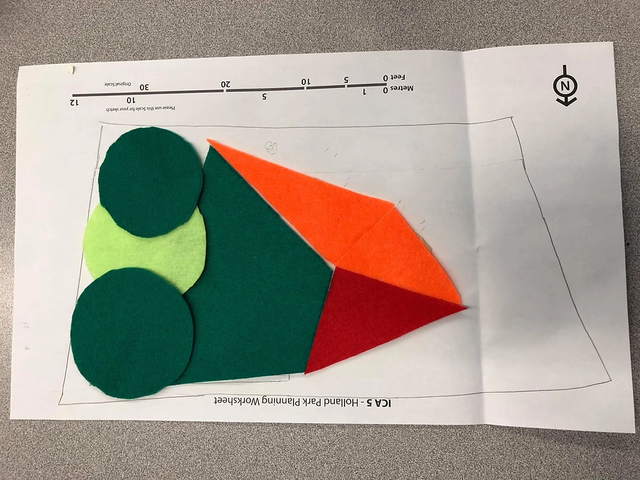
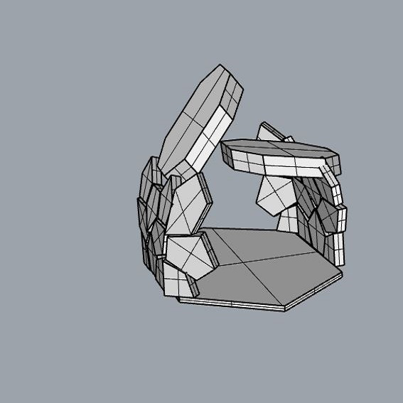
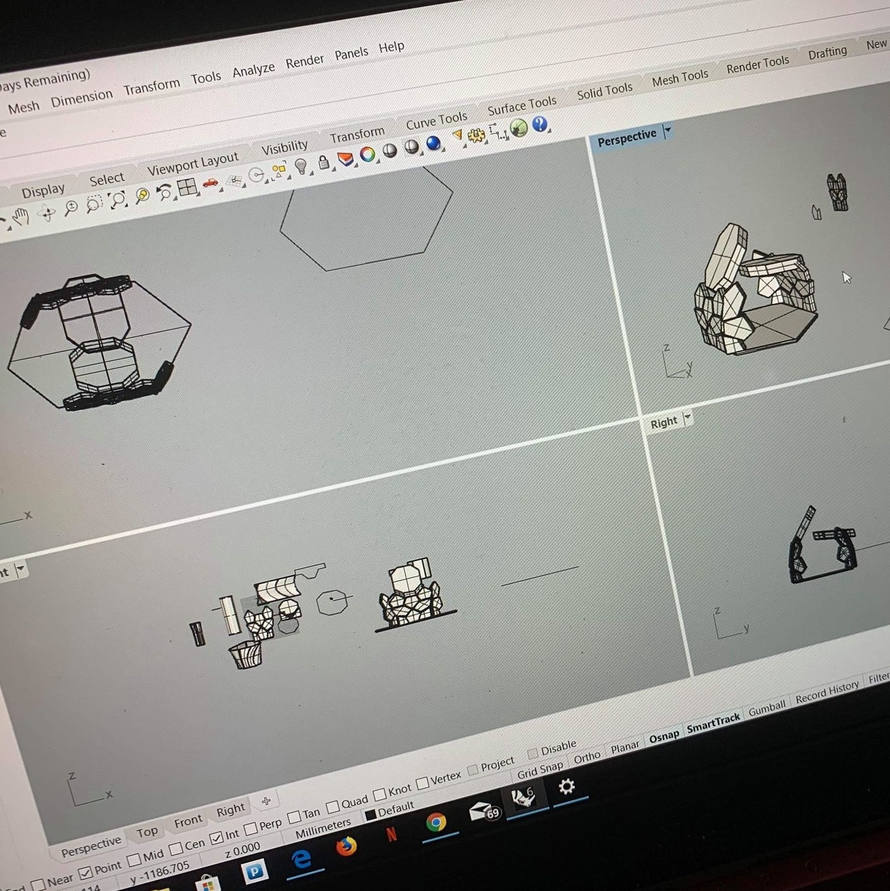
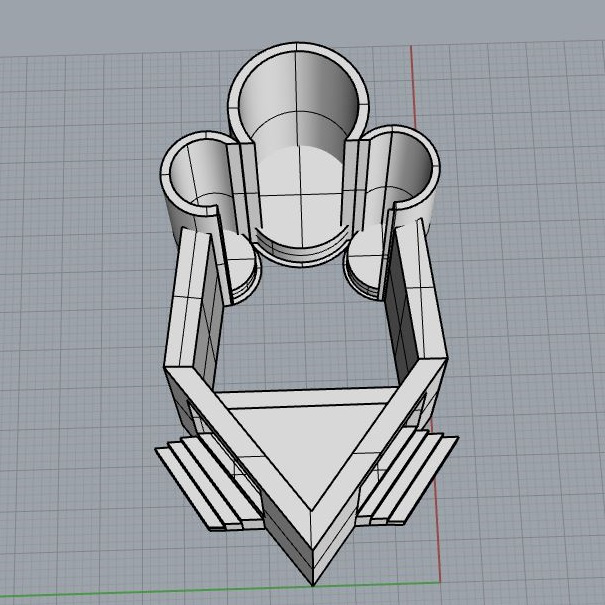
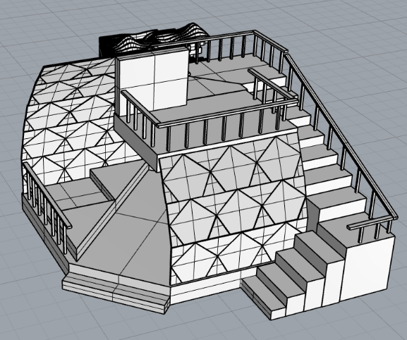
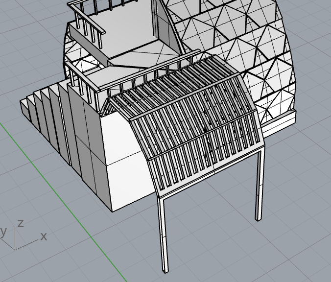
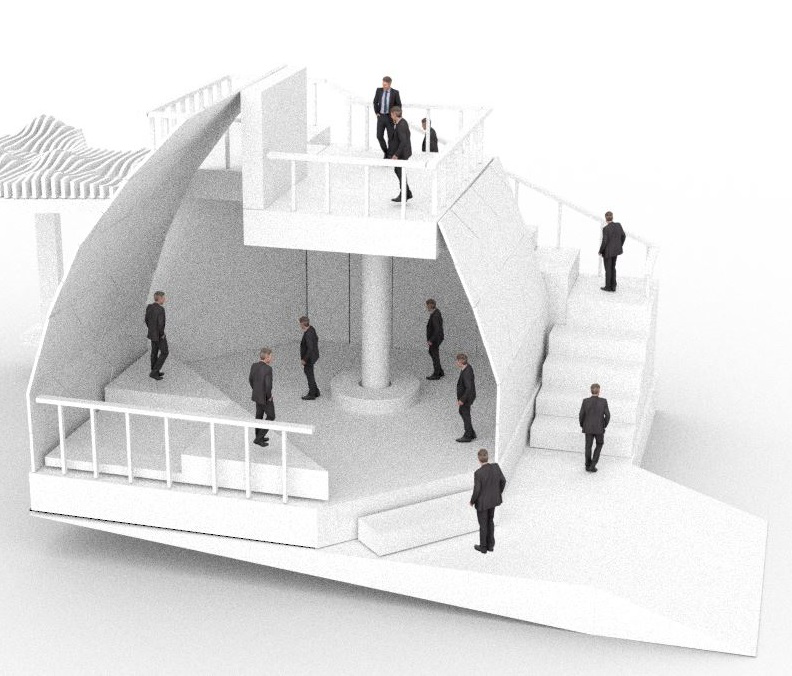
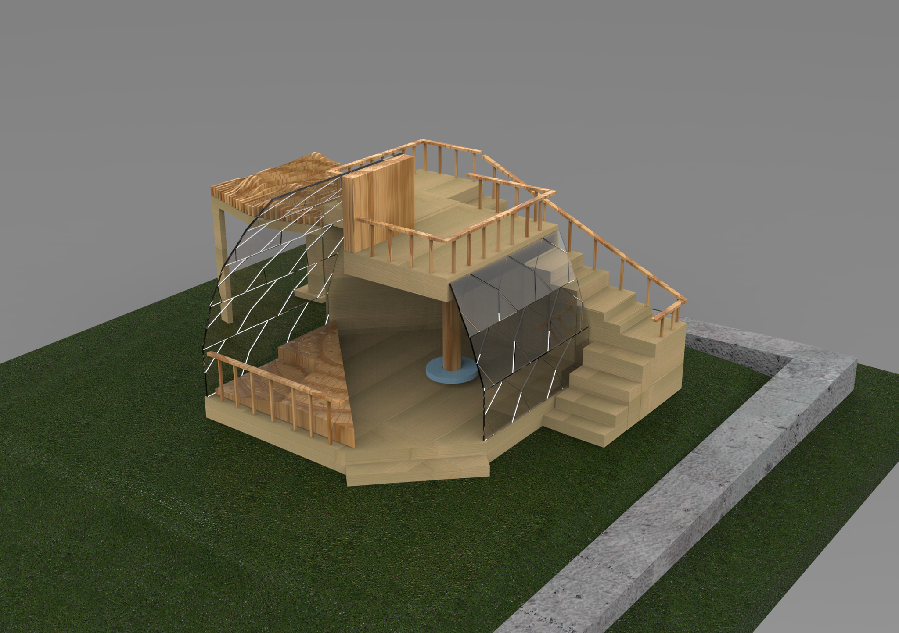
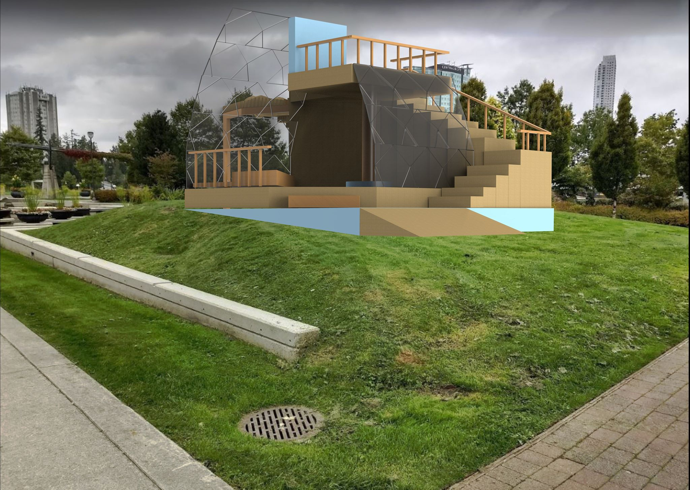

Overview
The deliverables of the project were distributed amongst 5 weeks, with each week being a step towards the final design. The project was worked on by a team of 4. For my part, I designed. created and rendered the 3D model of the pavilion after combining the ideas provided by my team-mates. I had learnt basic skills in working with Rhinoceros 6 thanks to the projects submitted earlier in the course however, this project really helped me get well-versed with the software. Further, this project also helped me get familiar with architecture design principles since we were required to choose a few and implement those in our design. We were initially required to build a physical model of our design but due to covid-19 we ended up rendering it digitally which helped me get familiar with KeyShot 9.
Process
Week 1 - Ideation
As a first step we were individually required to find a location around the Holland Park area which we could use as an inspiration for the elements we would implement in our pavilion. We chose an incline surface because it would make the pavilion visible from a long distance also there was a popular attraction right across (the flower pond) making an axis line between. Next, as a group we were required to brainstorm and sketch initial building design ideas by using the surroundings to motivate our design. We were also made to physically create our initial design ideas using felt compositions which give us a better visual of how the design would look.


Week 2 - Rhino Model draft
After we decided on a specific design, we began to create 3D models individually with each member having a variation in their design. We did this to have more variety of designs and choose the one to move forward with later. I began my design using pentagon shapes as the walls after being inspired by the flower shapes from the pond across. Also, I made the elevated surface inclined so it would be parallel to the base surface we selected in the park which is inclined as well. I planned to achieve panel and wall architecture as our design style and implement rhythm and hierarchy as for the design principles.



Week 3 - Draft Model final
After presenting my first design during the online critique we decided to work on my design because it was the most creative out of our designs. From there I began to add elements to improve the aesthetics of my design as well as complete the functionality. This pavilion in Figure 1 takes into consideration the space of the performers, the audience, as well as general aesthetic ideas. It consists of 2 glass panels with hexagonal and triangular shapes carved in them to improve aesthetics and add the rhythm element into the design. Also, one of the panels is bigger than the other to produce visual hierarchy. The pavilion has 2 elevated horizontal planes one for the stage and one for the second floor. The stage was designed to hold 3 performers at a time and around 15-20 people watching on the first floor. The stairs take you to the second floor which can hold about 10-15 people at a time. The square block is made as a screen so it will be showing the performance taking place downstairs. The circulation is centric as a person would enter and go around the circular path and exit from the same place. The pavilion consists of mass and panel architecture.



Week 4 - Keyshot Render
Due to covid-19 we weren’t able to assemble a physical model which was initially planes so we were made to render the model in a 3D render software. I first found our site's location on Google Maps and adjusted our pavilion according to the site. For example, I rotated our model such that the visitors would have a view of the entire park once they were on the second floor. Next, I used the model we created in Rhino in order to render it in Keyshot. I faced some challenges because my computer wasn’t equipped with adequate processing speed to render the models quick enough. To fix that issue, I decided to force Keyshot to stop updating/rendering the model constantly while the program is in use. This helped cut down on the CPU usage. Once I solved the issues, I placed human figurines in and around the model in order to portray the human experience. For the material applications, I proceeded to go with the materials provided to us in the course. I used transparent plastic in order to build the glass panels, blue foam to build the base and the small circular pole table, wood for the railings, poles and stage, and cardboard for the walls and stairs.



Reflection
This project turned out to be more challenging than I thought since it was assigned during the covid pandemic. The course had taught me how to use sketching using Rhino, but I had to figure out how to use KeyShot by myself in order to add materials to the 3D render. To make things worse contacting my teammates became more difficult as the weeks progressed so the project fell all over the place. However, I really enjoyed working with the software’s and I'm glad I got to work on it mostly by myself because it helped me find my passion for 3D model making and made me realize this is what I want to do in the future.